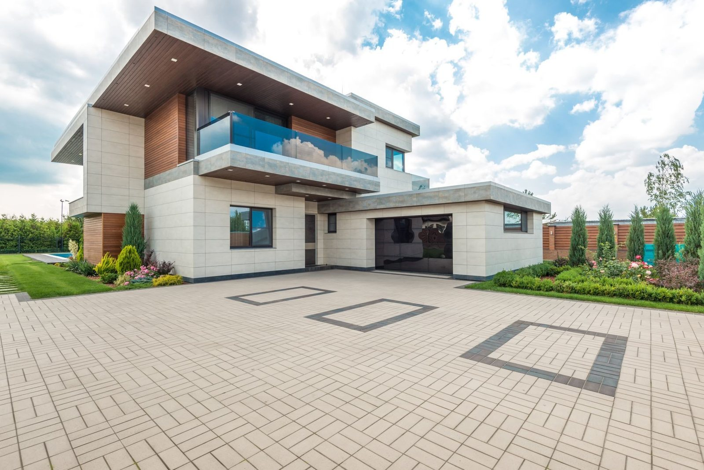
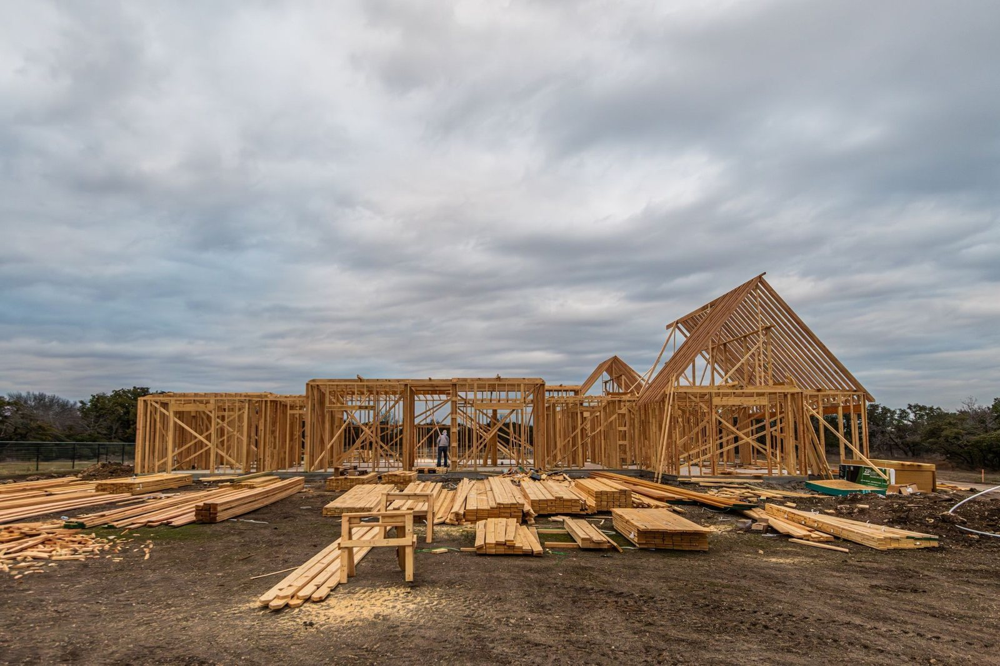
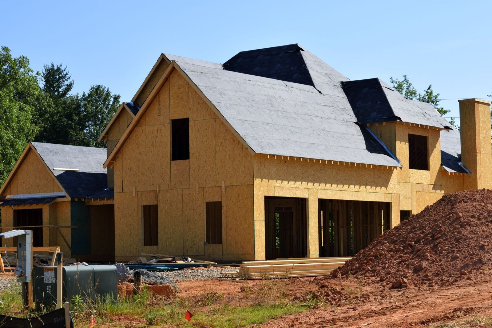
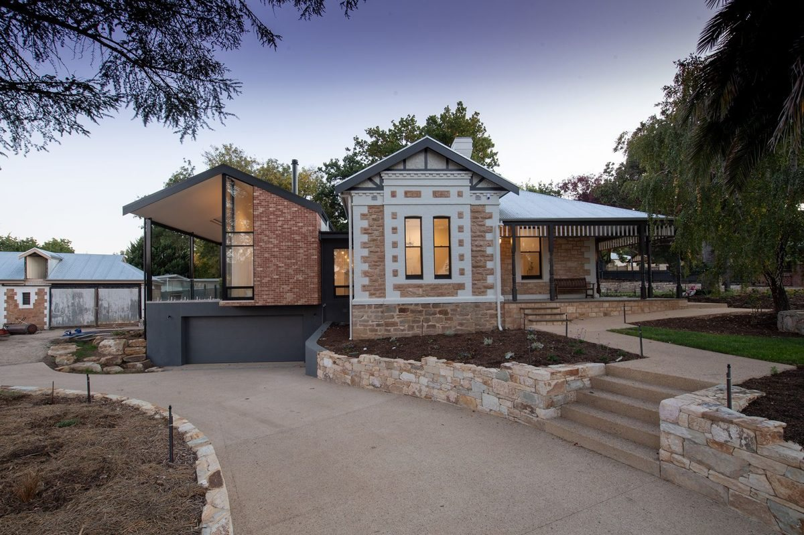
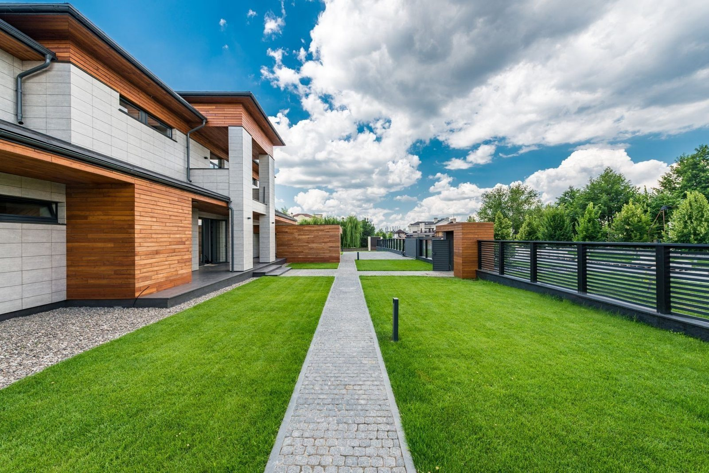

Prace ziemne minikoparką
Wykopy pod fundamenty i przyłącza, drenaże, korytowanie pod kostkę i wyrównanie terenu. Mała maszyna wjedzie tam, gdzie duża się nie zmieści.
Zapytaj o wycenę
Bart-Ziem to usługi minikoparką w Wałbrzychu i okolicy, dla osób prywatnych, firm i instytucji. Kopiemy pod fundamenty i przyłącza, robimy drenaże, korytujemy pod kostkę i równamy teren. Mała maszyna wjedzie do ogrodu za domem, na podwórko i na ciasną działkę, gdzie koparko-ładowarka by się nie zmieściła.


Prace

Fundamenty

Rowy i drenaże

Niwelacja
Zdjęcia poglądowe pokazują rodzaj prac, które wykonujemy.
Prowadzimy robotę od pierwszego telefonu do równego terenu.

Wykopy pod fundamenty→
Ławy pod dom, garaż, altanę albo ogrodzenie. Ziemię odkładamy tam, gdzie wskażesz, żeby wróciła potem do zasypki.

Przyłącza i rowy→
Wąskie wykopy pod wodociąg, kanalizację, prąd i gaz, od budynku do granicy działki.

Drenaże i odwodnienia→
Rowy pod drenaż wokół domu, studnie chłonne i odprowadzenie deszczówki, żeby woda nie stała pod ścianą.

Niwelacja i ogród→
Wyrównanie działki pod trawnik, rozplantowanie ziemi po budowie, skarpy, doły pod drzewa i oczko wodne.

Korytowanie pod kostkę→
Zdejmujemy ziemię na głębokość pod podbudowę podjazdu, ścieżki albo tarasu, żeby brukarz dostał równe koryto.

Ciasne miejsca→
Podwórka, przejścia między budynkami, działki za domem i teren przy istniejącym ogrodzeniu.
Dzwonisz i mówisz, co trzeba zrobić i gdzie. Wystarczy z grubsza: wykop, przyłącze, drenaż.
01Telefon

Przyjeżdżamy, sprawdzamy dojazd i grunt. Podajemy cenę i ustalamy dzień wjazdu.
02Oględziny i wycena

Kopiemy, zasypujemy i równamy, pilnując ogrodzenia, trawnika i tego, co już stoi na działce.
03Praca minikoparką

Zostawiamy wyrównaną działkę, gotową dla murarzy, brukarza albo pod ogród.
04Teren gotowy

Atuty
- Wycena po oględzinachCena przed wjazdem
- Wałbrzych i okoliceDojeżdżamy na miejsce
- Firmy i prywatniTeż krótkie zlecenia
- Ciasne miejscaMinikoparka wejdzie
- Teren gotowyRówno po robocie